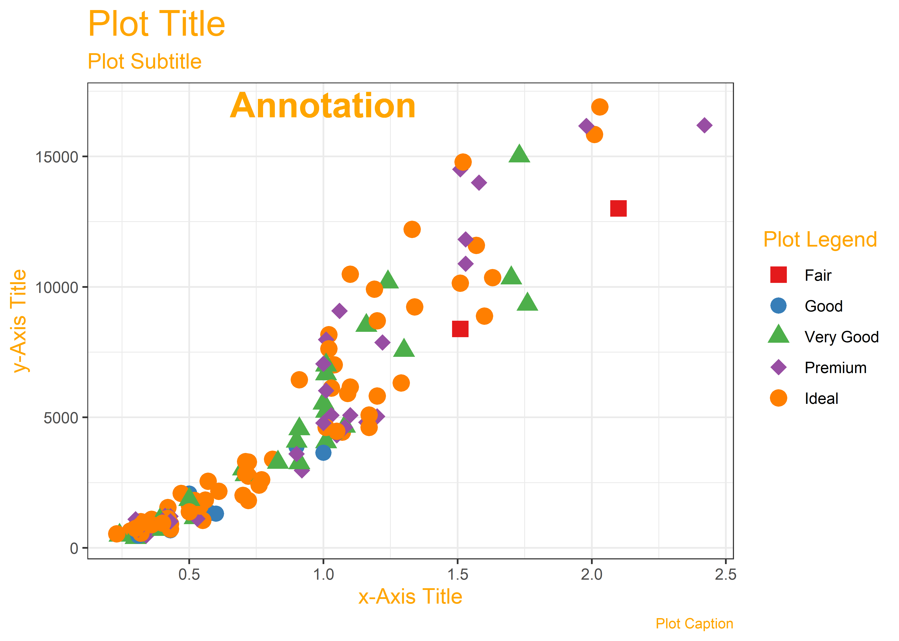

🕶 Science, Human Experience, Experiments, and Data
Why do we visualize data
Where does Data come from?
We will need to form a basic understanding of basic scientific enterprise. Let us look at the slides. (Also embedded below!)
Why Visualize?
- We can digest information more easily when it is pictorial
- Our Working Memories are both short-term and limited in capacity. So a picture abstracts the details and presents us with an overall summary, an insight, or a story that is both easy to recall and easy on retention.
- Data Viz includes shapes that carry strong cultural memories; and impressions for us. These cultural memories help us to use data viz in a universal way to appeal to a wide variety of audiences. (Do humans have a gene for geometry?1);
- It helps sift facts and mere statements: for example:


Each variable is a column; a column contains one kind of data. Each observation or case is a row.
How do we Spot Data Variable Types?
By asking questions! Shown below is a table of different kinds of questions you could use to query a dataset. The variable or variables that “answer” the question would be in the category indicated by the question.
| No | Pronoun | Answer | Variable/Scale | Example | What Operations? |
|---|---|---|---|---|---|
| 1 | How Many / Much / Heavy? Few? Seldom? Often? When? | Quantities, with Scale and a Zero Value.Differences and Ratios /Products are meaningful. | Quantitative/Ratio | Length,Height,Temperature in Kelvin,Activity,Dose Amount,Reaction Rate,Flow Rate,Concentration,Pulse,Survival Rate | Correlation |
| 2 | How Many / Much / Heavy? Few? Seldom? Often? When? | Quantities with Scale. Differences are meaningful, but not products or ratios | Quantitative/Interval | pH,SAT score(200-800),Credit score(300-850),SAT score(200-800),Year of Starting College | Mean,Standard Deviation |
| 3 | How, What Kind, What Sort | A Manner / Method, Type or Attribute from a list, with list items in some " order" ( e.g. good, better, improved, best..) | Qualitative/Ordinal | Socioeconomic status (Low income, Middle income, High income),Education level (HighSchool, BS, MS, PhD),Satisfaction rating(Very much Dislike, Dislike, Neutral, Like, Very Much Like) | Median,Percentile |
| 4 | What, Who, Where, Whom, Which | Name, Place, Animal, Thing | Qualitative/Nominal | Name | Count no. of cases,Mode |
As you go from Qualitative to Quantitative data types in the table, I hope you can detect a movement from fuzzy groups/categories to more and more crystallized numbers.

Each variable/scale can be subjected to the operations of the previous group. In the words of S.S. Stevens
the basic operations needed to create each type of scale is cumulative: to an operation listed opposite a particular scale must be added all those operations preceding it.
Some Examples of Data Variables
Example 1: AllCountries
Q1. How many people in Andorra have internet access?
A1. This leads to the Internet variable, which is a Quantitative variable, a proportion.2 The answer is \(70.5\%\).
Example 2:StudentSurveys
Q.1. What kind of students are these?
A.1. The variables Gender, and Year both answer to this Question. And they are both Qualitative/Categorical variables, of course.
Q.2. What is their status in their respective families?
A.2. Hmm…they are either first-born, or second-born, or third…etc. While this is recorded as a number, it is still a Qualitative variable3! Think! Can you do math operations with BirthOrder? Like mean or median?
Q.3.How big are the families?
A.3. Clearly, the variable that answers is Siblings and since the question is synonymous with “how many”, this is a Quantitative variable.
Data Visualization is the act of “mapping” a geometric aspect/aesthetic to a variable in data.The aesthetic then varies in accordance with the data variable, creating (part of) a chart.
What might be the geometric aesthetics available to us? An aesthetic is a geometric property, such as x-coordinate, y-coordinate, length/breadth/height,radius,shape,size, linewidth, linetype, and even colour…

What does this “mapping” mean? That the geometric aesthetics are used to represent qualitative or quantitative variables from your data, by varying in accordance to the data variable. For instance, length or height of a bar can be made proportional to theage or income of a person. Colour of points can be mapped to gender, with a unique colour for each gender. Position along an axis x can vary in accordance with a height variable and y with a bodyWeight variable.

A chart may use more than one aesthetic: position, shape, colour, height and angle,pattern or texture to name several. Usually, each aesthetic is mapped to just one variable to ensure there is no cognitive error. There is of course a choice and you should be able to map any kind of variable to any geometric aspect/aesthetic that may be available.
Note that here is also a “natural” mapping between aesthetic and [kind of variable] Section 5, Quantitative or Qualitative. For instance, shape is rarely mapped to a Quantitative variable; we understand this because the nature of variation between the Quantitative variable and the shape aesthetic is not similar (i.e. not continuous). Bad choices may lead to bad, or worse, misleading charts!
In the above chart, it is pretty clear what kind of variable is plotted on the x-axis and the y-axis. What about colour? Could this be considered a z-axis in the chart? There are also other aspects that you can choose (not explicitly shown here) such as the plot theme(colours, fonts, backgrounds etc), which may not be mapped to data, but are nonetheless choices to be made. We will get acquainted with this aspect as we build charts.
We can think of simple visualizations as combinations of aesthetics, mapped to combinations of variables. Some examples:
| Variable#1 | Variable#2 | Chart Names | Shape |
|---|---|---|---|
| Quant | None | Histogram and Density |
|
| Qual | None | Bar Chart | |
| Quant | Quant | Scatter Plot, Line Chart, Bubble Plot, Area Chart |
|
| Quant | Qual | Pie Chart, Donut Chart, Column Chart, Box-Whisker Plot, Radar Chart, Bump Chart, Tree Diagram |
|
| Qual | Qual | Stacked Bar Chart, Mosaic Chart, Sankey, Chord Diagram, Network Diagram |
|
So there we have it:
- Questions lead to Types of Variables (Quant and Qual)
- Further Questions lead to relationships between them, which we describe using Data Visualizations
- Data Visualizations are Data mapped onto Geometry
- Multiple Variable-to-Geometry Mappings = A Complete Data Visualization
You might think of all these Questions, Answers, Mapping as being equivalent to metaphors as a language in itself. And indeed, in R we use a philosophy called the Grammar of Graphics! We will use this grammar in the R graphics packages that we will encounter.
Open Intro Stats: Types of Variables
Lock, Lock, Lock, Lock, and Lock. Statistics: Unlocking the Power of Data, Third Edition, Wiley, 2021. https://www.wiley.com/en-br/Statistics:+Unlocking+the+Power+of+Data,+3rd+Edition-p-9781119674160)
Claus Wilke. Fundamentals of Data Visualization. https://clauswilke.com/dataviz/
Footnotes
https://www.xcode.in/genes-and-personality/how-genes-influence-your-math-ability/↩︎
How might this data have been obtained? By asking people in a survey and getting Yes/No answers!↩︎
Qualitative variables are called Factor variables in R, and are stored, internally, as numeric variables together with their levels. The actual values of the numeric variable are 1, 2, and so on.↩︎
Citation
@online{venkatadri2021,
author = {Venkatadri, Arvind},
title = {🕶 {Science,} {Human} {Experience,} {Experiments,} and {Data}},
date = {2021-11-01},
url = {https://av-quarto.netlify.app/content/courses/Analytics/Descriptive/Modules/05-NatureData/nature-data.html},
langid = {en}
}